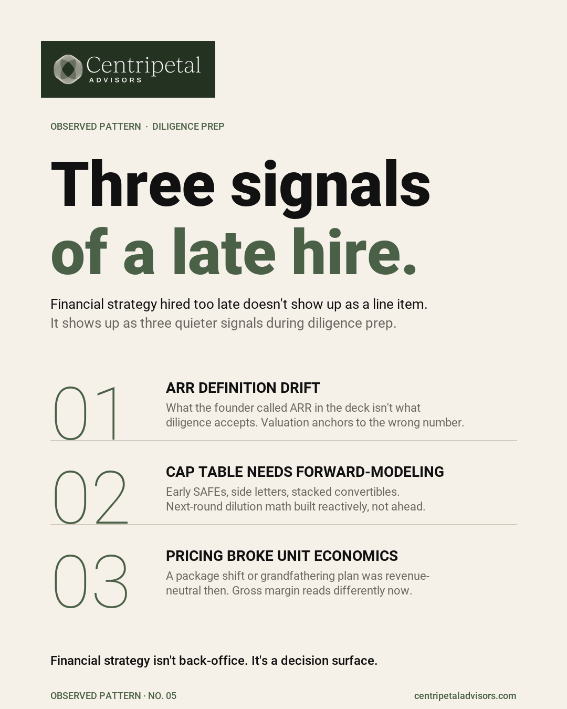

Three Signals Financial Strategy Arrived Too Late
The late hire rarely appears as a line item. It appears as a few quieter signals that surface when the company needs leverage.

Signal 1: ARR changed definition between the deck and the data room
Implementation fees, multi-year contracts, gross bookings, and live recurring revenue can all enter the conversation under the same shorthand. The issue is not that the business changed. It is that the definition changed without the reporting system keeping up.
When cleanup begins in the middle of diligence, the valuation conversation may already be anchored to a number nobody can defend consistently.
Signal 2: The cap table needs forward-modeling right before the round
Founders often know the dilution math for the current financing. What is missing is the model that shows how earlier SAFEs, side letters, convertibles, option-pool changes, and a later round affect ownership across scenarios.
That is a decision problem, not an administrative one. Forward-modeling before the term-sheet conversation creates options; reconstructing it during the process narrows them.
Signal 3: A pricing change quietly broke unit economics
A package shift, grandfathering plan, or discount program can look revenue-neutral at launch. Gross margin, implementation burden, and cohort economics may tell a different story six to twelve months later.
The signal is not simply that pricing changed. It is that nobody built the view that would show the tradeoff while the company still had time to adjust.
What to do before the next financing conversation
- Write one ARR definition and reconcile it across the deck, model, billing data, and data room.
- Run cap-table scenarios before a term sheet arrives.
- Review pricing changes by cohort, gross margin, and implementation effort.
- Assign an owner to each recurring decision system, not just each spreadsheet.
Frequently asked questions
What are signs that financial strategy arrived too late?
ARR definitions shifting between the deck and data room, a cap table requiring forward-modeling immediately before a round, and pricing changes that quietly changed unit economics.
Why does ARR definition drift matter?
When the deck, model, and data room use different definitions, cleanup happens during diligence and the narrative loses consistency at the moment leverage matters.
Make the next decision earlier.
Bring the model, financing question, or operating change. We start with the decision surface behind the number.
Talk with Centripetal